рефакторинг дизайн-системы b2b-платформы sbercaldera
привет! меня зовут павел, я maintainer дизайн-системы cds в сбере. сопровождаю ядро библиотеки в core-frontend команде, поддерживаю процесс и качество дизайна
вводные
- компания
- сбер
- продукт
- caldera — внутренний b2b банковский продукт для рынка индии
- роль в проекте
- maintainer дизайн-системы cds
- инструменты
- pixso, storybook, tokens studio, bitbucket, jenkins
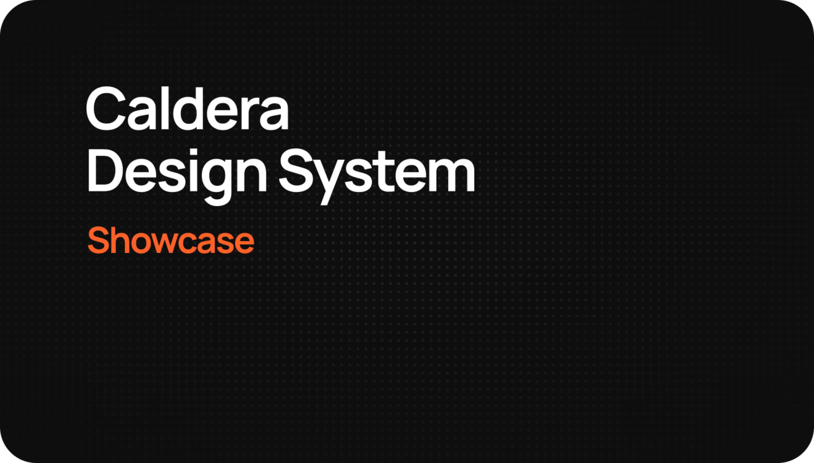
краткая сводка
что делал
- Изучал существующие сервисы и текущие рабочие сценарии.
- Начал собирать основную статистику по дизайн-системе: overrides, adoption rate, time to review, % blocked PR.
- Полностью отрефакторил Master-файл с компонентами и улучшил архитектуру всех компонентов.
- Собрал основное пространство дизайн-системы с гайдлайнами и паттернами.
- Выстроил новый цветовой кор и вывел новую палетку.
- Внедрил токены, выстроил связку дизайн — код и пайплайн в BitBucket.
- Написал полную документацию для каждого компонента.
- Выстроил процесс работы с Core-Frontend командой.
- Ввёл системный Publish.
что в итоге
- Улучшены удобство и стабильность работы с библиотекой.
- Time to review ускорился в 2 раза: 88,75 → 45,22 дня (сложные продуктовые модули).
- Появился полноценный процесс Review для выкатки в Master branch в Storybook.
- Видим полные цифры по метрикам и можем на них ориентироваться, сократили список нарушителей, не подключённых к Ядру.
- Устранён хаос с цветовой палеткой и в Pixso, и в коде.
- Появился единый источник правды — пространство дизайн-системы и документация к каждому компоненту.
- Построили CI/CD-пайплайн для синхронизации и непрерывной поставки.
предыстория
В 2022 году внутри контура Сбера появился продукт Caldera — внутренний b2b банковский продукт для рынка Индии. Вместе с развитием продукта появилась и дизайн-система CDS. Как только я пришёл в команду, были заметны ключевые проблемы в дизайн-системе и тянущиеся legacy-костыли, которые оставались нерешёнными.
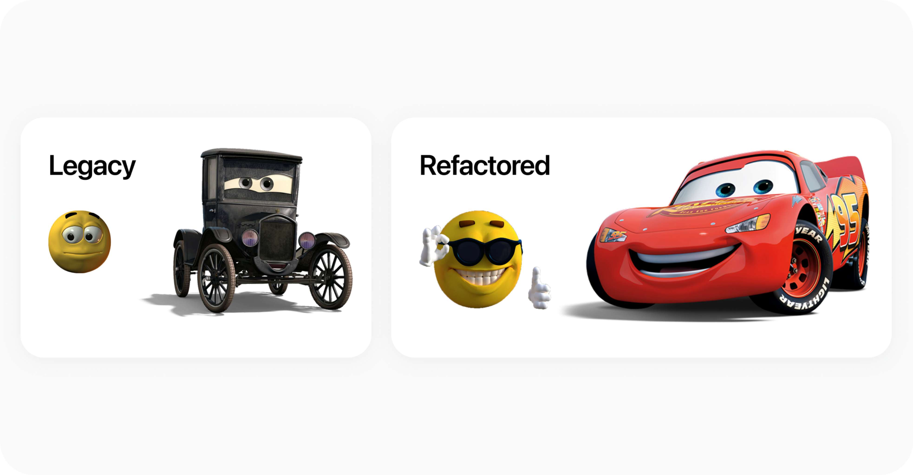
С моим приходом и инициативой в качестве моста между разработкой и дизайном мы в первую очередь наладили коммуникацию, устранили все тянущиеся баги с визуалом в Master-ветке, сделали опыт пользователя в ключевых сценариях консистентным и обновили проблемную библиотеку. Начали замерять дизайн-систему и понимать проблемы с её использованием. Я полностью отрефакторил проблемный файл с компонентами в Pixso, чтобы Master-компоненты не слетали. Паблиши стали системными и получили версии.
сложности на старте и определяем проблему
Май — приближался конец Q2. Основной целью менеджеров продуктовых команд было завершение задач из текущего роадмапа, поэтому было сложно договориться о выделении дополнительных ресурсов на решение UI-проблем и несоответствий дизайну.
Старая дизайн-система с большими недостатками:
- Был бук для дизайнеров по компонентам, но не все компоненты в нём были обновлены и актуальны.
- Отсутствовали некоторые состояния компонентов.
- Детская и сломанная палетка цветов.
- Неудобные Master-компоненты с множеством вложенностей, у которых слетают настройки.
- Были не все компоненты: часть лежала в файле гайдлайнов, и возникал диссонанс — к какой библиотеке компонент принадлежит и почему он там.
- Халтурное отношение к неймингу Master-компонентов.
- Брошенные на полпути компоненты, которые передали в разработку, но они потерялись по тем или иным причинам.
- Не хватало правил использования компонентов и общих паттернов поведения системы.
- Файл с компонентами был проходным двором: каждый мог проявить инициативу и сделать компонент.
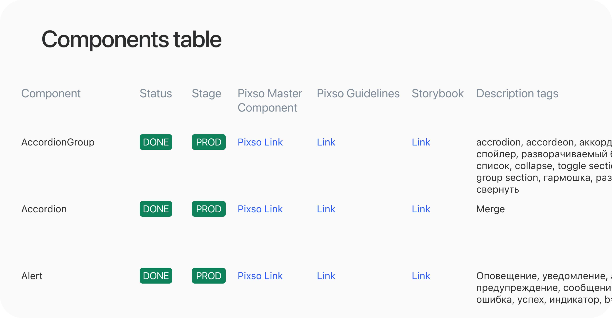
как я решал проблемы
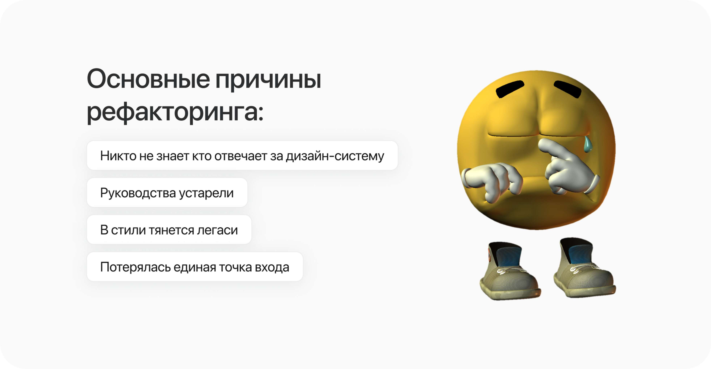
Над проектом работала вся дизайн-команда: распределяли нагрузку и планировали процессы, но не зафиксировали роли. Большая когнитивная ловушка: когда ответственных много, нет контроля и начинается бардак — считай, ответственного нет вовсе.
Рассказал о проблеме отсутствия контроля и забрал на себя менеджерскую роль. Ответственность на одном человеке — the end. С такой позиции стало проще принимать решения и контролировать процесс на верхнем уровне.
Провёл полный аудит библиотеки UI-компонентов. Проанализировал существующую архитектуру и выявил проблемные зоны: дублирующиеся компоненты, отсутствие документации, несогласованность стилей, скрытые слои в библиотеке, проблему детачей. Разработал план рефакторинга с приоритизацией задач. Создал систему категоризации и нейминг-конвенции, добавил теги к каждому компоненту для удобной навигации.
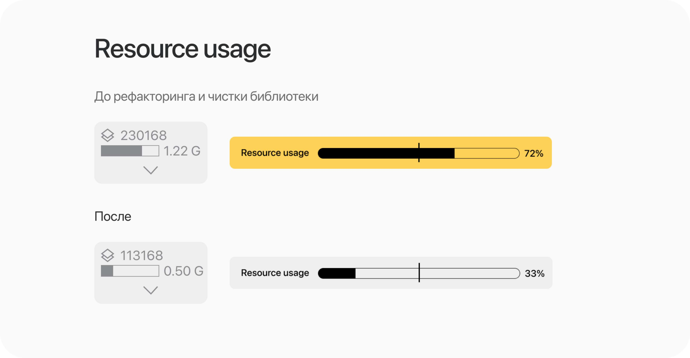
Большое количество разношёрстных компонентов в одном месте, необъятные горы легаси, нестандартные решения вне общих паттернов — всё это разрушало систему изнутри и мешало работе.
В компонентах и библиотеках стремительно рос беспорядок. На системный подход и единообразие в макетах не хватало ресурсов: бюджет выделялся строго на релизные задачи, и рос и без того тяжёлый дизайн-долг.
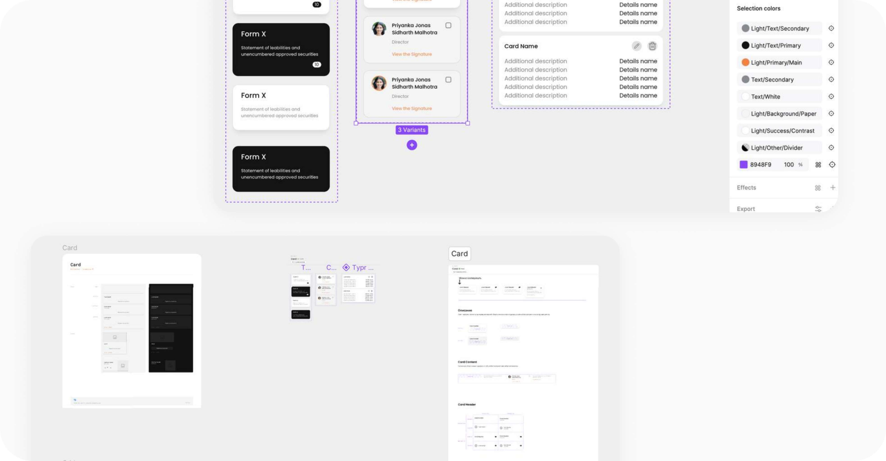
Как итог, без внимания и ухода дизайн-система перестаёт работать и быть источником правды. Компоненты устаревают, правила не обновляются, процессы распадаются. Почему у этого компонента такой пропс? Куда пропал тот или иной стейт?
Неухоженность системы заставляет вернуться к классическому подходу «да мне быстрее самому придумать», вместо того чтобы привыкать к неудобному инструменту. Не осуждаем: мы все тянемся к удобному и избегаем дискомфорта.
Главная проблема — для каждого типового решения придумываются костыли, потому что в дизайн-системе его нет или его не смогли найти. Это повышает % overrides и forks. Это очень большая проблема: микросервисы начинают жить в своей версии библиотеки (клоне), и переход на новую версию превращается в боль.
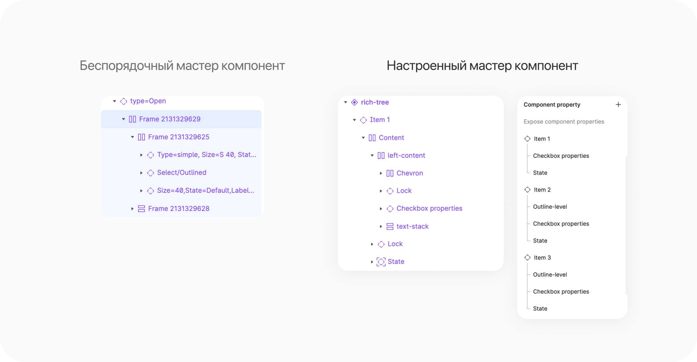
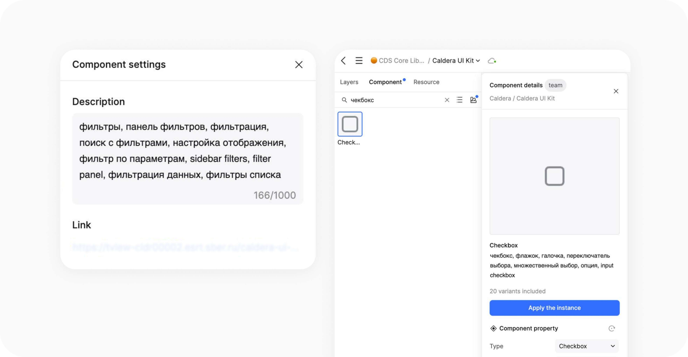
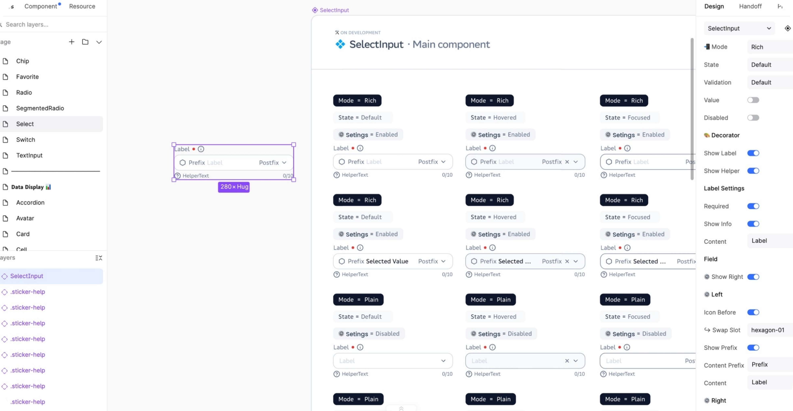
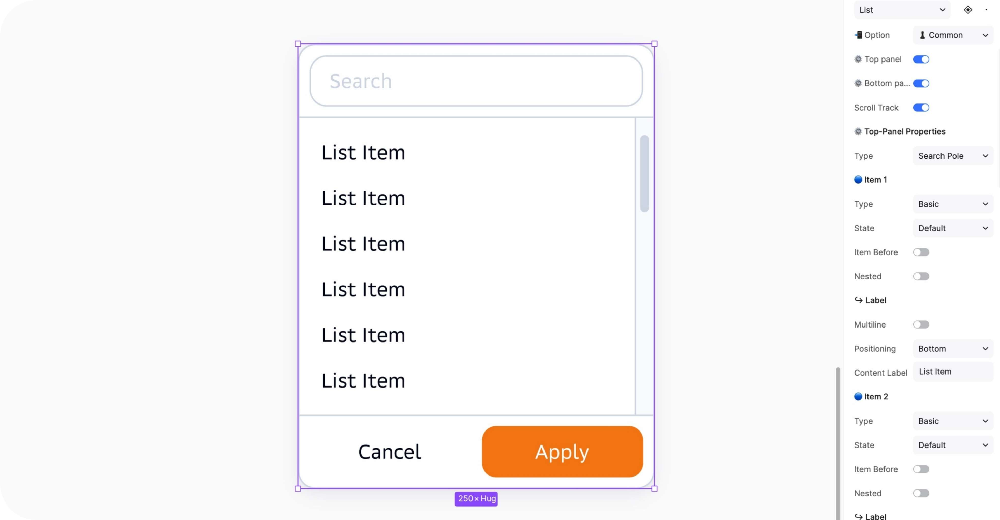
Вручную пылесосил захламлённые компоненты: каждому компоненту дали ссылку на актуальный Storybook, депрекейтнул устаревшие файлы, обновил документацию, показали изменения команде и собрали обратную связь.
Провёл большое ревью Storybook и библиотеки компонентов на соответствие. Нашёл как мелкие баги, так и критичные: например, компонент тянул не тот массив цветов из библиотеки, а некоторых состояний не было вовсе.
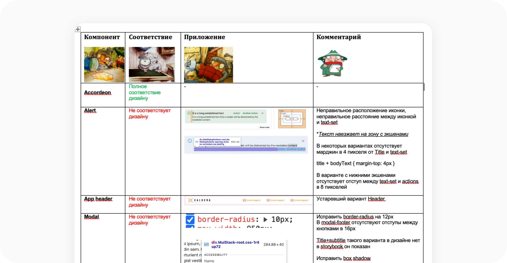
Вместе с разработчиками разобрали состояние компонентов, прошлись по всем вопросам и расставили приоритеты баг-фиксов и сроки релизов.
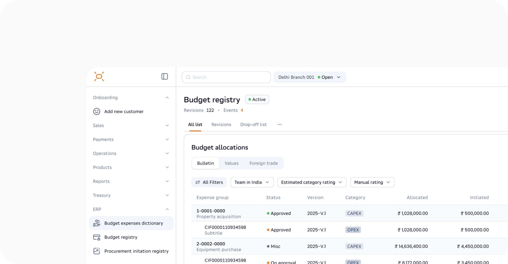
проблема pixso
Мы работаем в Enterprise-версии. В Master-компоненте приходится выкручиваться и тестировать, чтобы ничего не сломалось при следующих апдейтах компонента — сборка на булевых настройках это компенсирует. Изначально все компоненты в библиотеке почему-то были собраны только на селектах, и работа шла медленно: Pixso очень тяжело менять и вставлять инстансы.
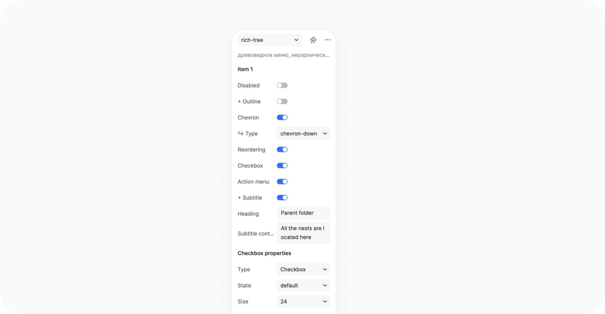
остановил хаос десятков безымянных и «сломанных» паблишей
Раньше каждый дизайнер публиковал библиотеку по своему усмотрению — без описания изменений, даты или статуса. В результате всем постоянно приходило уведомление об обновлении библиотеки, и обновлялись на свой страх и риск.
Я предложил и закрепил простое правило: паблиш — это не кнопка, а событие. Каждая публикация теперь включает:
- Тип изменения:
- Fix
- исправление ошибки в компоненте
- Minor
- обновление или добавление компонента
- Major
- добавление компонента, который влияет на другие компоненты
- Rebuild
- пересборка файла и очистка
- Нумерацию версий по SemVer.
- Чёткий чейнджлог в описании.
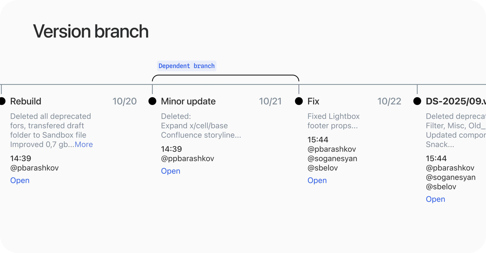
собрал общее пространство
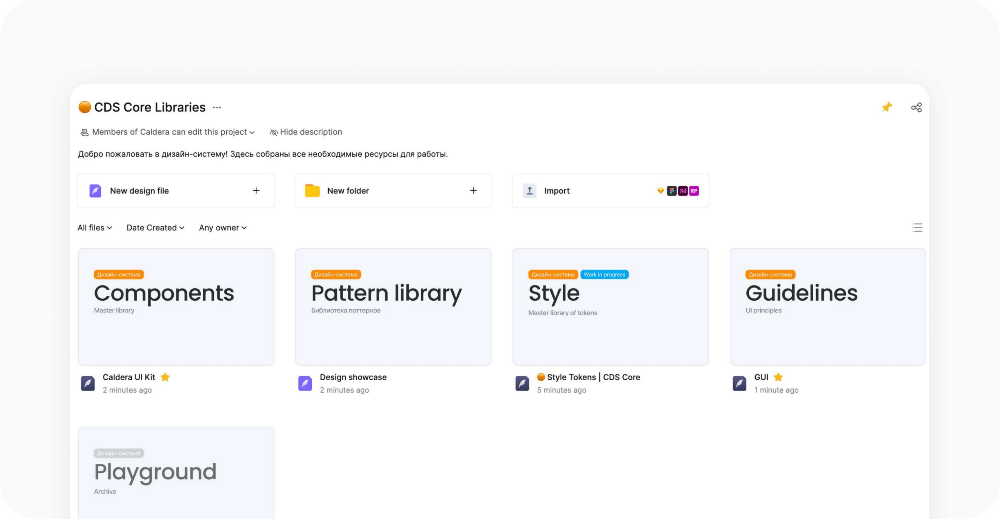
Проделал большую работу по рефакторингу файла, протестировал и собрал фидбэк, что при использовании библиотеки точно ничего не ломается. Создал новое пространство и занялся разбиением.
Начал рефакторить подачу гайдов. До этого это был просто текст и картинка на белом фоне. Теперь объясняем чётко, как работать с тем или иным компонентом, рассказываем о его архитектуре и о том, куда можно поставить кастомный элемент, если очень нужно.
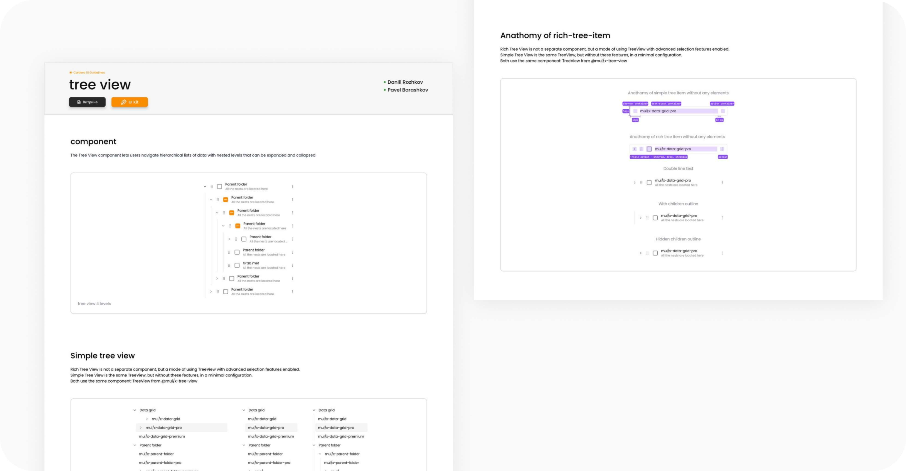
Теперь у нас появилась возможность формализовать правила прохождения дизайн-ревью. Раньше каждый дизайнер интерпретировал компонент по-своему, и каждый случай рассматривался отдельно. Системно это неправильно и отнимает кучу времени.
После рефакторинга мы можем собрать чёткий алгоритм: как и что должно собираться — эффективно, быстро и по правилам.
перестройка палетки и ввод системы токенов
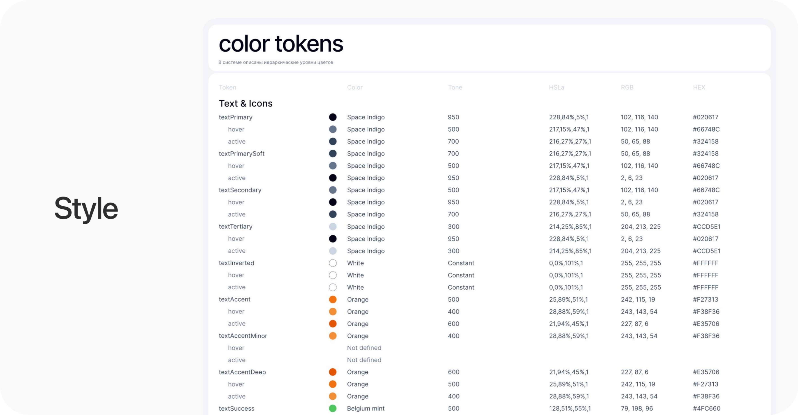
Придя в продукт, я заметил проблему с цветовой палеткой: как ей пользуются, как её подают и как разработчики переносят её на фронт.
Цвета вроде бы были определены, но любой мог взять цвет, предназначенный для одного элемента, и применить к другому — не хватало оттенков. Мы не стартап, но свободы было слишком много.
Оттенки одного цвета имели разброс по яркости и насыщенности без логики: например, Оранжевый 5 был тусклее Оранжевого 4. А названия вроде «basic-white» или «accent-main» не давали понять ни иерархию, ни назначение цвета.
Ключевые проблемы:
- оттенки без системы;
- субъективные названия без чёткой принадлежности;
- разброс цветов в Storybook;
- оттенки уходят в желтизну.
Взял на себя пересмотр палетки и приведение её к системе. За основу структуры взяли систему семантики SDDS Plasma (в Pixso нет Variables). Plasma UI использует двухуровневую архитектуру цветовых токенов.
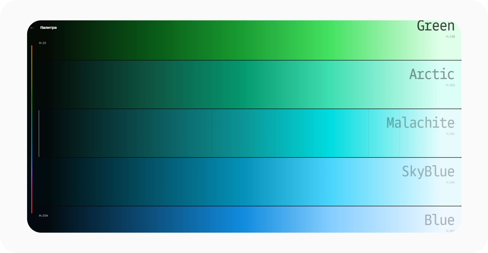
Пересмотрел примитивы и их оттенки и выявил, что во всей палетке страдают контрастность и насыщенность. Система цветовой градации MUI, к которой мы были привязаны, не подходила: цвета получались тусклыми и блёклыми. Посмотрел лучшие практики и решил выводить цвета сам, но с учётом системных принципов.
| 500 | Base — основной цвет |
|---|---|
| 50–400 | Уменьшаю кривую Saturation и увеличиваю Lightness. Если оставить насыщенность на одном уровне с тоном 500, цвета получаются грязными, перенасыщенными или «плоскими». |
| 600–950 | Уменьшаю Lightness и слегка меняю кривую Saturation в зависимости от того, «тухнет» ли цвет. |
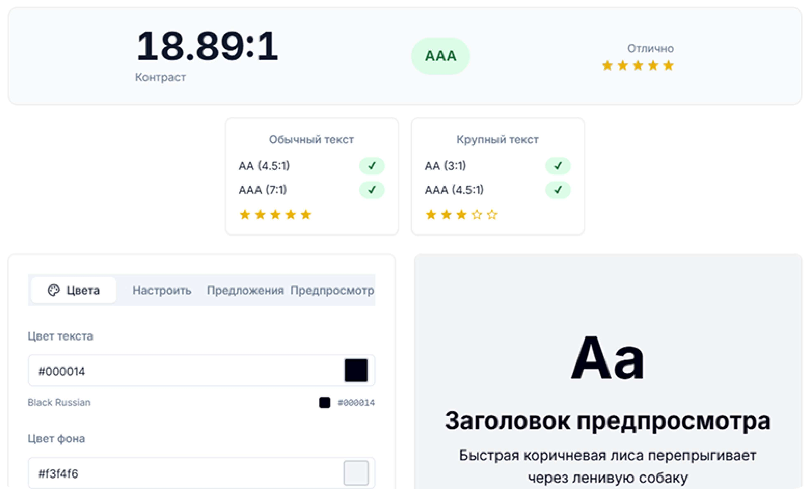
Вручную примерял все цвета к интерфейсу и проверял контраст. Старался подобрать оттенки для людей, которые работают на обычных дисплеях 200–400 нит, перебирал разные настройки экрана до 500 нит.
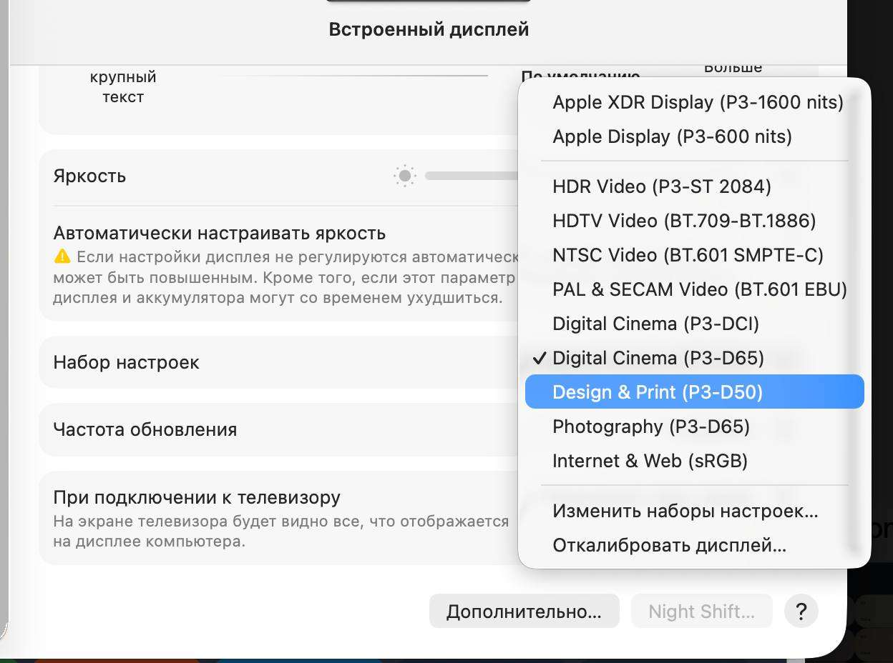
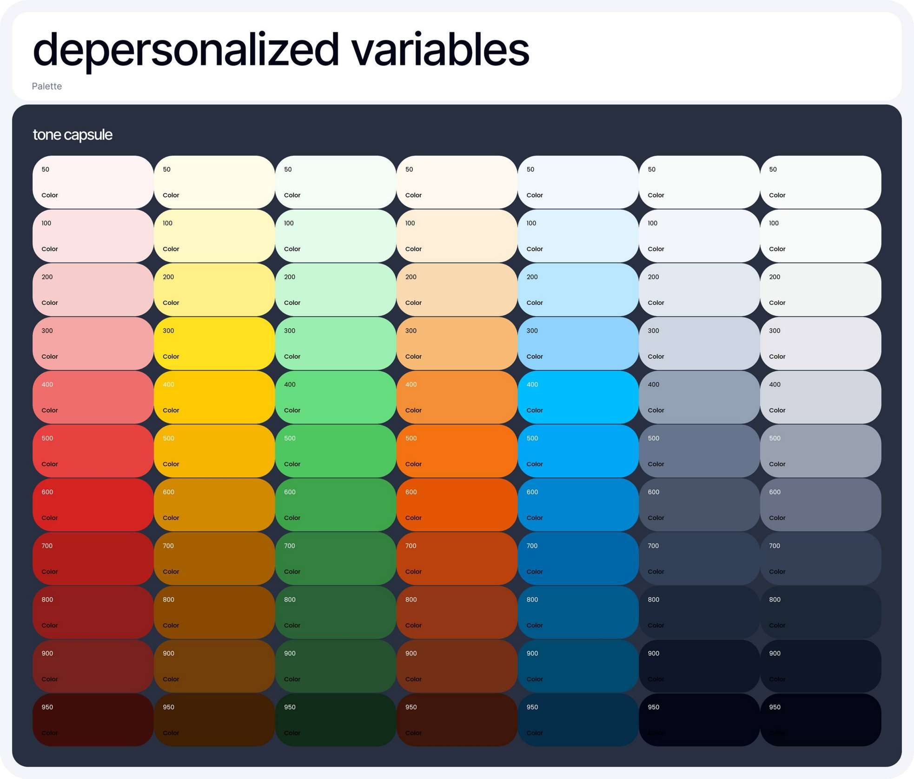
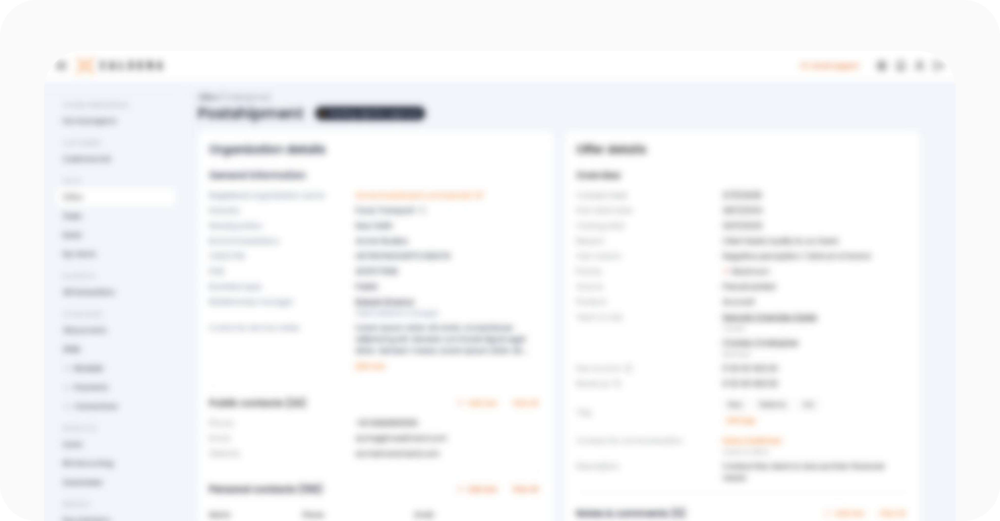
После вывода «обезличенных» оттенков с градацией тона от 50 до 950 выводим их в семантику:
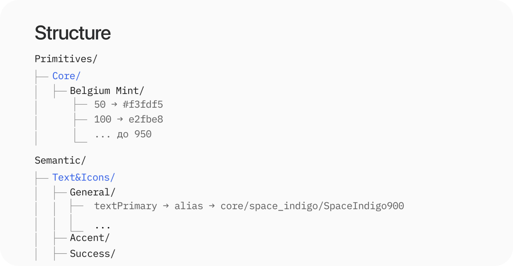
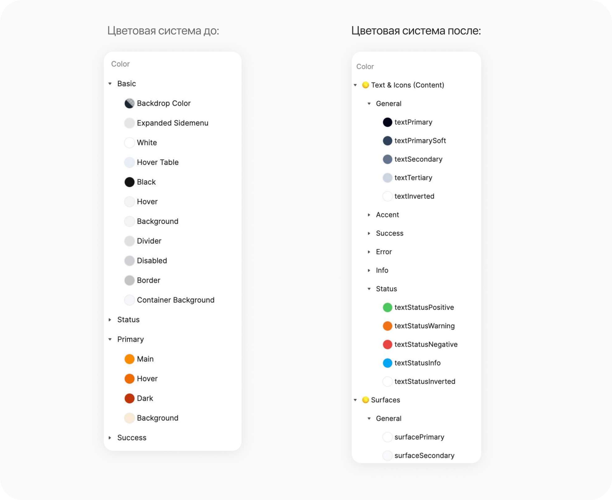
ci/cd pipeline
Для автоматизации обновления токенов и библиотеки иконок спроектировали пайплайн с учётом ограничений безопасности Сбера. Tokens Studio не поддерживает веб-хуки, поэтому предложили альтернативное решение: от добавления дизайнером SVG-файла до публикации npm-пакета в репозиторий.
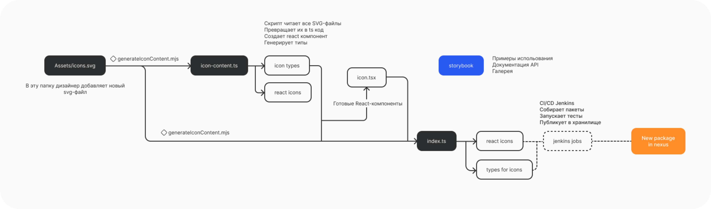
Сценарий работы дизайнера с пайплайном в BitBucket:
- Дизайнер создаёт новую ветку в BitBucket.
- Загружает SVG-файлы в папку
assets/icons. - Создаёт merge request.
- Разработчик апрувит merge.
- После мержа запускается пайплайн.
Эта архитектура — полностью автоматизированный пайплайн: от добавления исходного SVG-файла дизайнером до публикации готового npm-пакета в репозиторий.
- Автоматическая генерация кода. Процесс начинается в папке
assets, куда дизайнеры загружают новые SVG-файлы. СкриптgenerateIconContent.mjsавтоматически парсит эти файлы и генерирует код. - API библиотеки. Унифицированный компонент
Icon.tsx— универсальная обёртка, которая динамически импортирует нужный компонент и применяет стили и типы. Файлindex.tsагрегирует все React-компоненты и их типы и даёт чистый интерфейс для импорта. - Документация. Storybook интегрирован для визуализации: в нём галерея всех иконок, примеры использования и описание API. Разработчики быстро находят и копируют нужные компоненты.
- CI/CD и поставка — Jenkins Pipeline. При обновлении кода запускается задача в Jenkins: сборка проекта (build), запуск автотестов (tests), сборка документации Storybook. Успешно прошедший пакет автоматически отправляется в Nexus-репозиторий компании для использования в продуктах.
Ключевые преимущества:
- нет ручного написания кода при добавлении новых иконок;
- полная типизация (type safety);
- наглядная документация для команды;
- автоматическая доставка обновлений до конечных потребителей.
Архитектура, отработанная на библиотеке иконок, полностью переносится на дизайн-токены:
- Одинаковый процесс трансформации. Кастомный скрипт читает JSON-файл с токенами и валидирует структуру. Меняется только логика.
- Пайплайн построен на стандартном сборщике, разница лишь в формате исходных данных.
- Идентичный контур CI/CD. Jenkins-джобы, тесты, сборка Storybook и публикация в Nexus работают независимо от входного формата. Для токенов добавляется только шаг валидации схемы и генерация кроссплатформенных форматов (CSS / SCSS / TS / Swift / XML), что вписывается в ту же ветку автоматизации.
- Масштабируемость. Один и тот же пайплайн может обслуживать сразу несколько артефактов дизайн-системы: иконки, токены и даже UI-компоненты. Это снижает порог входа для новых фич, ускоряет доставку обновлений и исключает ручную синхронизацию между командами.
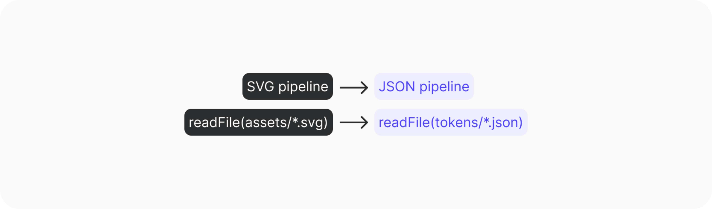
что имеем в итоге
библиотека иконок
- было
- 2–3 дня на добавление, ручная работа
- стало
- минуты: загрузил, дальше пайплайн собрал
дизайн-токены
- было
- рассинхрон
- стало
- 100% консистентность, автоматическая сборка
В совокупности:
- работает без внешних веб-хуков;
- валидация и тесты проходят до публикации, что снижает риск поломок;
- аудит: вся история изменений в BitBucket и логах Jenkins.